40 سؤال
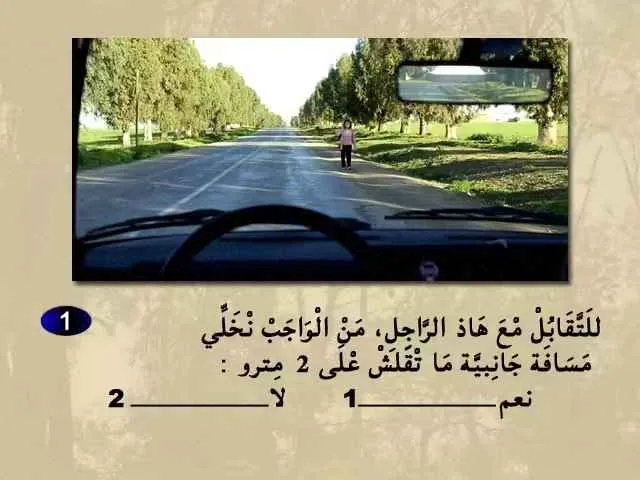
الجواب الصحيح: 1
ملي نتلاقاو مع شخص ولا حيوان برا المدينة، خصنا نخليو جوج متر ديال البعد. يعني ماخصناش نقربو كتر من جوج متر من الراجل اللي قدامنا.
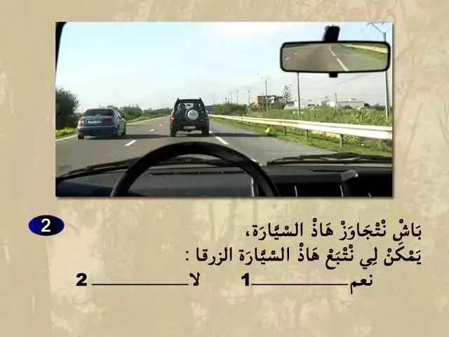
الجواب الصحيح: 1
الطريق اللي حنا فيها هي في اتجاه واحد (ماكايناش سيارات جاية من الجهة المقابلة) وهادشي باين من الخط اللي فاليسار. يعني نقدرو نتبعو سيارة حيث ماكايناش سيارة جاية من الخلف.
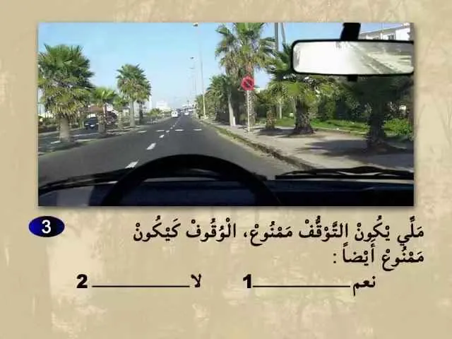
الجواب الصحيح: 2
التوقّف هو نوقف السيارة ونخليها ونمشي. الوقوف هو ننزلو راكب و نكملو طريقنا. العلامة الطّرقية كتقول ممنوع التوقّف يعني ممنوع نخليو السيارة ونمشي، ولكن الوقوف مسموح.
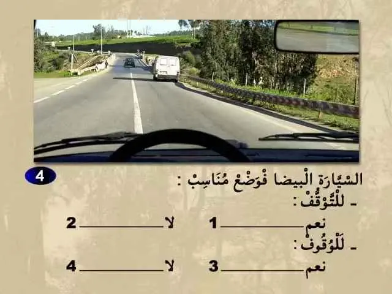
الجواب الصحيح: 2 و 4
الرصيف باللون الأبيض والأحمر يعني ممنوع التوقّف، ولكن الوقوف مسموح. ولكن في هاد الحالة، السيارة البيضا ممنوع توقف حيت كتسد الطريق.
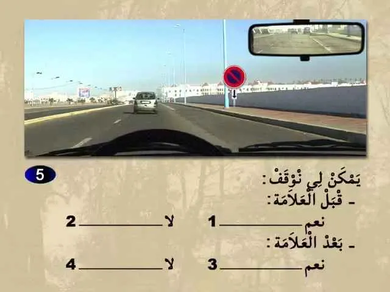
الجواب الصحيح: 1 و 3
العلامة الطّرقية كتقول ممنوع التوقّف ولكن الوقوف مسموح. يعني نقدر نوقف قبل العلامة وبعدها.
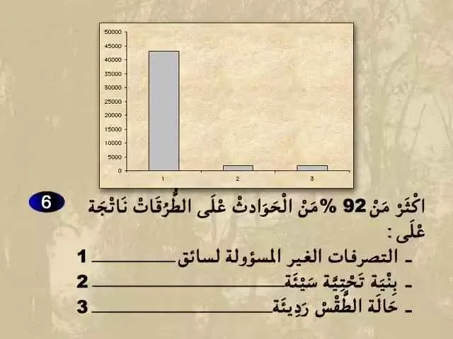
الجواب الصحيح: 1
المبيان كيقول بأن الرقم 2 و3 عندهم نسبة قليلة فالحوادث الطّرقية، ولكن الرقم 1 هو السبب الرئيسي حيث كيبين التصرفات الغير مسؤولة للسائق.
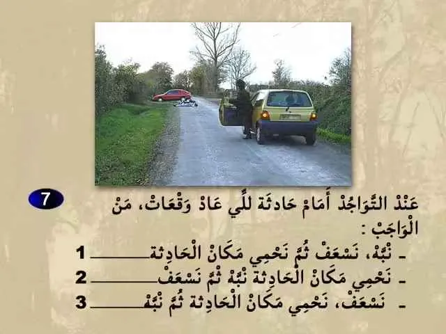
الجواب الصحيح: 2
ملي نكونو قدام حادثة، أول حاجة نديروها هي نحميو مكان الحادث ثم ننبهو (نديرو مثلث الخطر ببعيد) وأخيراً نسعفو.
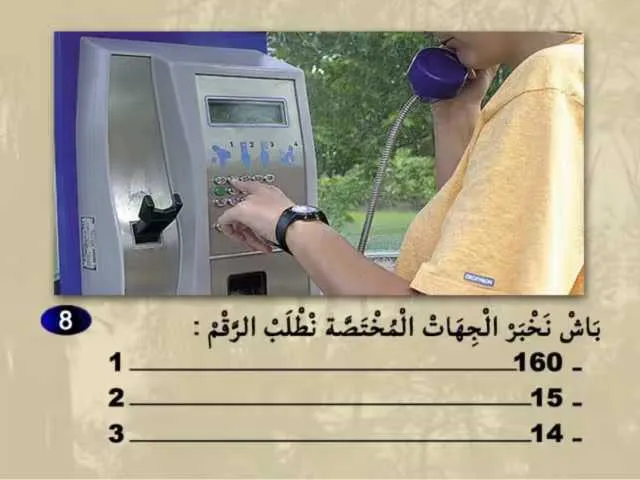
الجواب الصحيح: 1 و 2 و 4
باش نتاصل بالجهات المختصة الرقم هو 15 أو 150 والرقم 19 خاص بالشرطة.
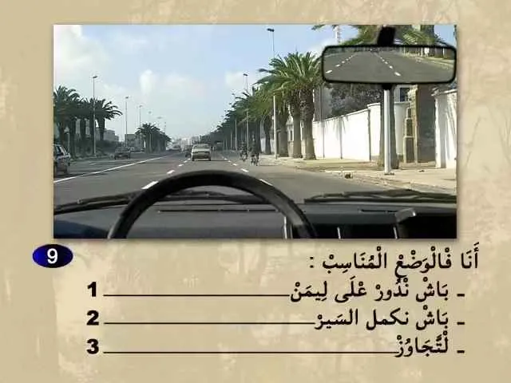
الجواب الصحيح: 3
الطريق فيها 3 مسارات، اليمين والوسط واليسار. المسار اللي فاليمين نقدرو نستعملوه للانعطاف لليمين أو نستمر. دابا في مسار التجاوز يعني في وضعية مناسبة للتجاوز.
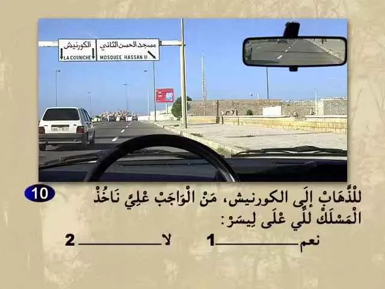
الجواب الصحيح: 1
العلامات الإرشادية كتعلمنا أن المسلك كيوصل لمسجد الحسن الثاني إذا كملنا فيه، وإذا بغينا نوصلو للكورنيش خصنا نمشيو فاليسار.
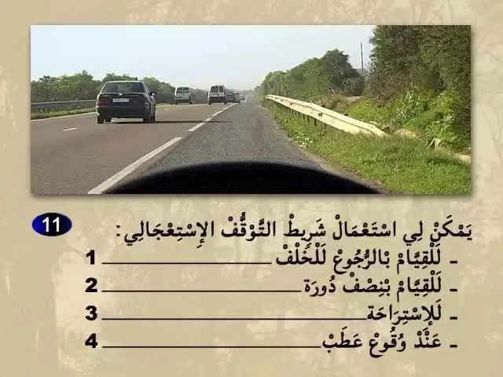
الجواب الصحيح: 4
شريط التوقّف الإستعجالي خاص إذا كان عطب. مايمكنش نستراحو فيه يعني مخالفة. فالطريق السيّار ممنوع الرجوع للخلف أو نصف دورة.
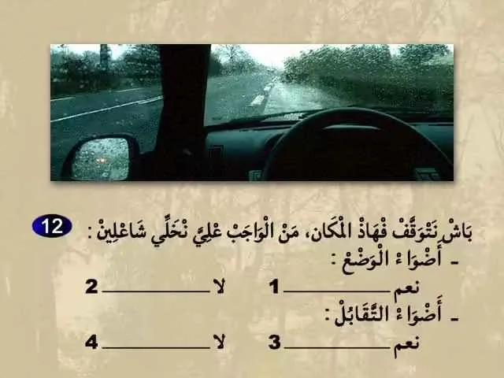
الجواب الصحيح: 1 و 4
الجو ممطر، الرؤية كتكون صعيبة والعربات مايبانوش مزيان، خاص نشعلو أضواء الوضع باش السيارة تبان.
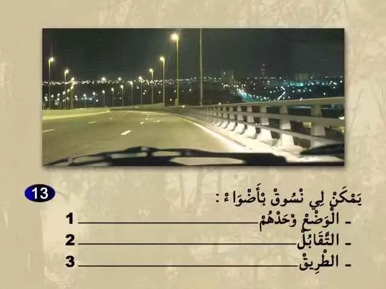
الجواب الصحيح: 1
داخل المدينة، كاينة الإنارة العمومية، نقدرو نسيرو بأضواء الوضع أو التقابل.
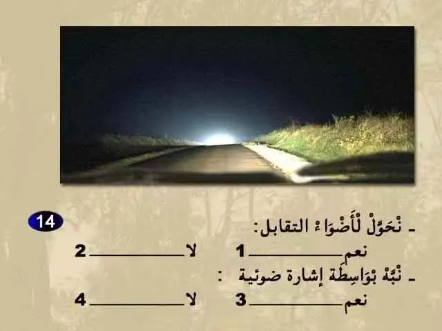
الجواب الصحيح: 1 و 3
خارج المدينة، أضواء الطّريق كتنور 100 متر والتقابل كتنور 30 متر. كاينة عربة جاية من الجهة المقابلة خاص نبدلو لأضواء التقابل باش ما نبهروش السائق.
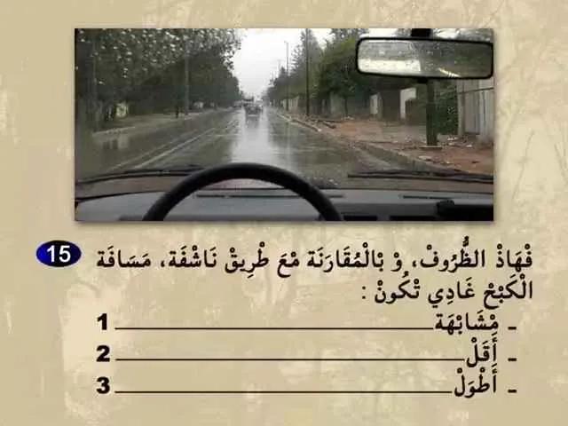
الجواب الصحيح: 3
الجو ممطر والطريق مبللة، مسافة الكبح كتكون أطول، خاص نخليو مسافة أمان كبيرة.
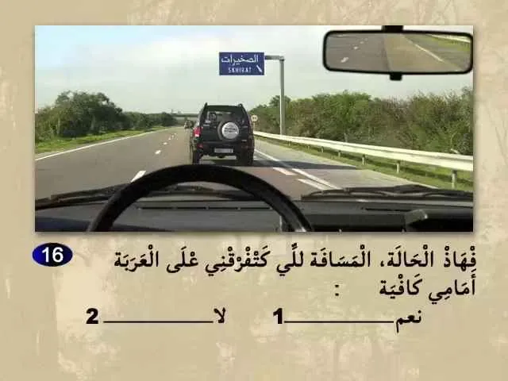
الجواب الصحيح: 2
المسافة بيني وبين العربة اللي قدامي قصيرة، يعني خاصني نبعد شوية.
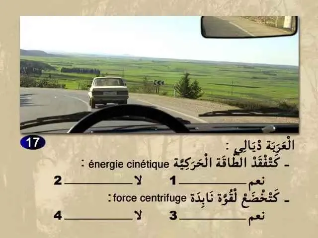
الجواب الصحيح: 2 و 3
الطّاقة الحركية هي الطاقة اللي عند العربة بسبب الحركة. القوة النابذة كاتجذبني لخارج المنعرج، خاصني ننقص السرعة قبل ما ندخل للمنعرج.
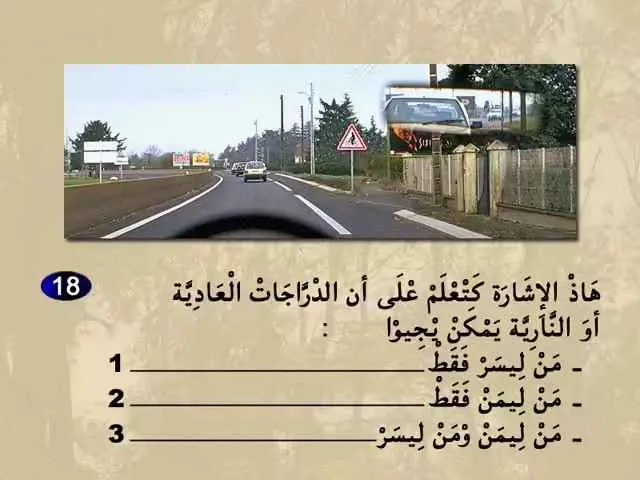
الجواب الصحيح: 3
الإشارة الطّرقية كتقول انتباه خطر الدراجات.
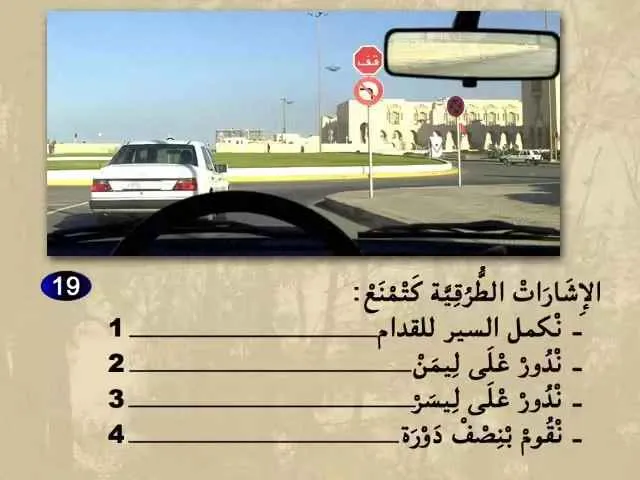
الجواب الصحيح: 3
الإشارة البعيدة كتقول ممنوع الوقوف والتوقّف، أما الإشارات الأخرى الأولى تعني إلزامية الوقوف، والثانية تعني ممنوع تغيير الاتجاه لليسار.
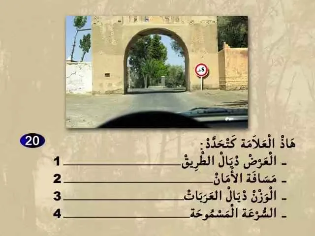
الجواب الصحيح: 3
الإشارة الطّرقية كتقول العربات اللي وزنها 5 طن وما فوق ممنوعة من المرور.
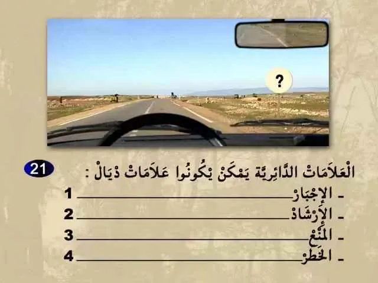
الجواب الصحيح: 1 و 3
العلامات الدائرية كتعني المنع او الإجبار.
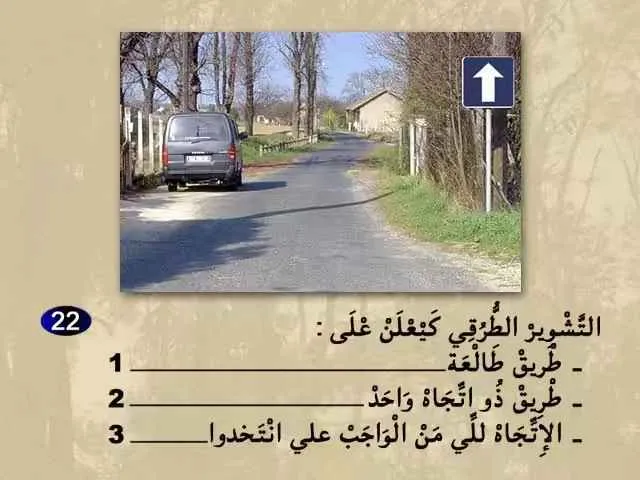
الجواب الصحيح: 2
العلامة الطّرقية كتشير بأن الطريق ذات اتجاه واحد.
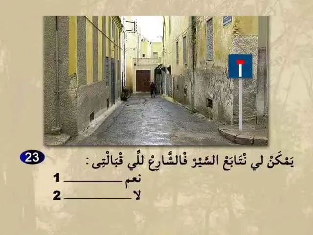
الجواب الصحيح: 1
نقدر نتابع السير في الشارع اللي قدامي. العلامة الطّرقية كتقول فقط بأن الطريق بدون مخرج.
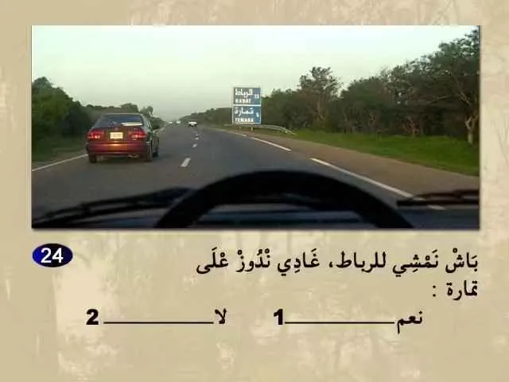
الجواب الصحيح: 1
العلامة الطّرقية كتقول باقي 6 كلم لتمارة و12 كلم للرباط. باش نمشيو للرباط خاصنا ندوزو من تمارة.
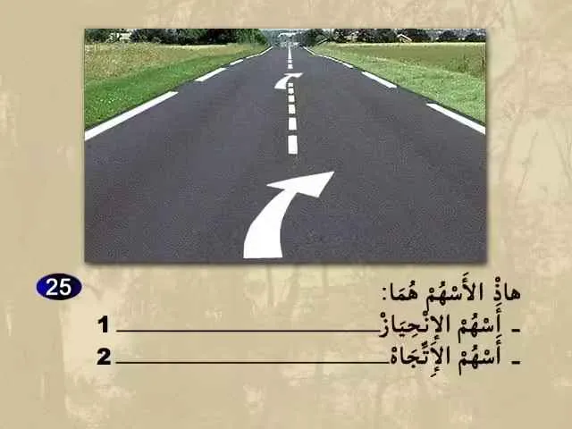
الجواب الصحيح: 1
الإشارات المرسومة على الأرض كتشير إلى أسهم الانحياز.
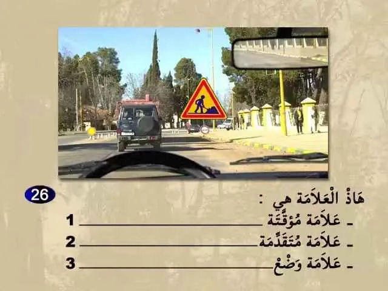
الجواب الصحيح: 1 و 2
العلامة الطّرقية مؤقتة (لونها أصفر) والخطر يبدأ بعد مسافة معينة.
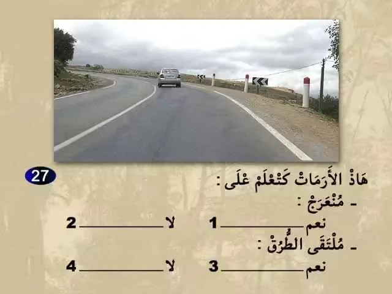
الجواب الصحيح: 1 و 4
الأرمات اللي فالصور كتشير إلى منعرج وليس ملتقى الطرق.
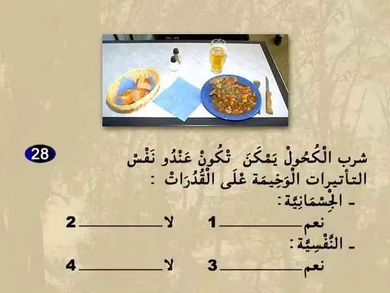
الجواب الصحيح: 1 و 3
شرب الكحول كيسبب في ضعف القدرات الجسمانية والنفسية.
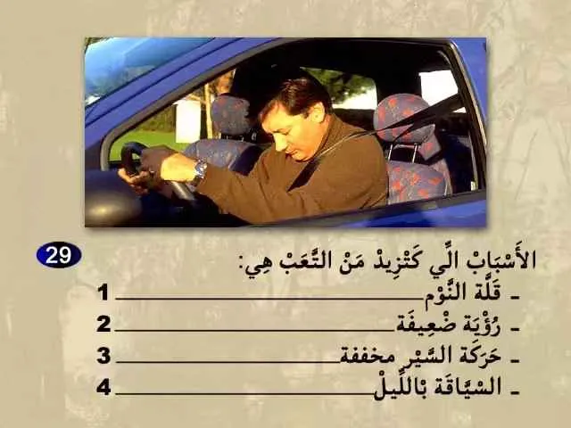
الجواب الصحيح: 1 و 2 و 4
الأسباب اللي كتزيد من التعب للسائق هي قلة النوم والرؤية الضعيفة والسياقة بالليل.
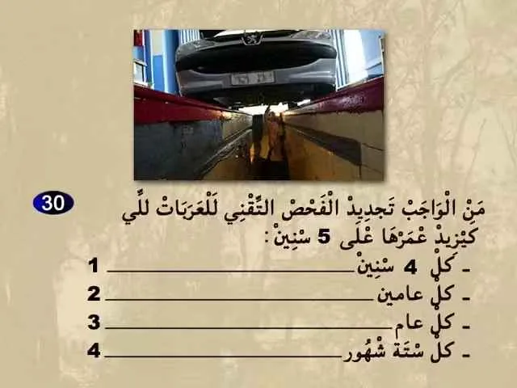
الجواب الصحيح: 3
كل عربة فوق 5 سنوات خاصها الفحص التقني كل عام.
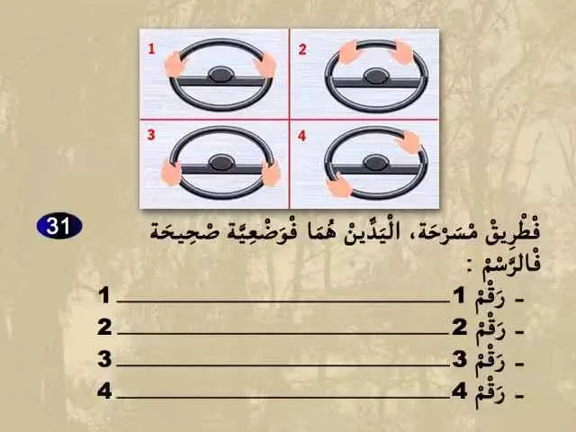
الجواب الصحيح: 1 و 3
فالطريق العادية، وضعية اليدين الصحيحة هي في الصورة رقم 1 ورقم 3.
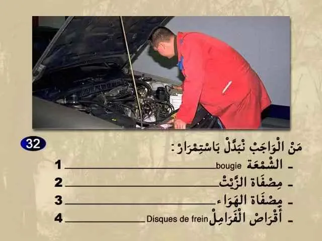
الجواب الصحيح: 1 و 2 و 3
خاصني نبدل باستمرار الشمعة (Bougie) ومصفاة الزيت ومصفاة الهواء. أقراص الفرامل ما نبدلهمش باستمرار.
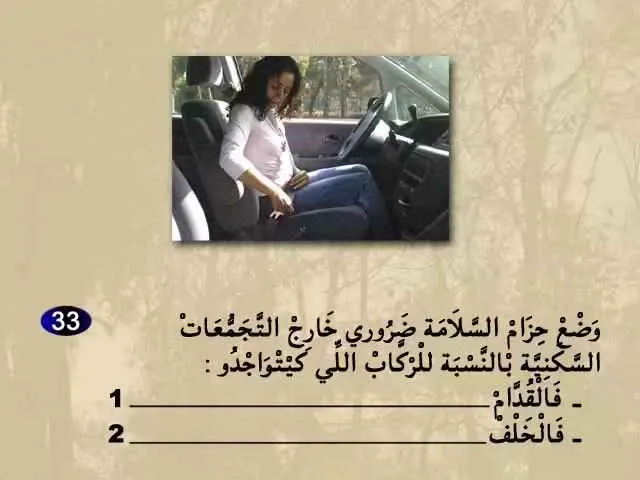
الجواب الصحيح: 1
داخل وخارج المدينة، وضع حزام السلامة ضروري للركاب في المقاعد الخلفية.
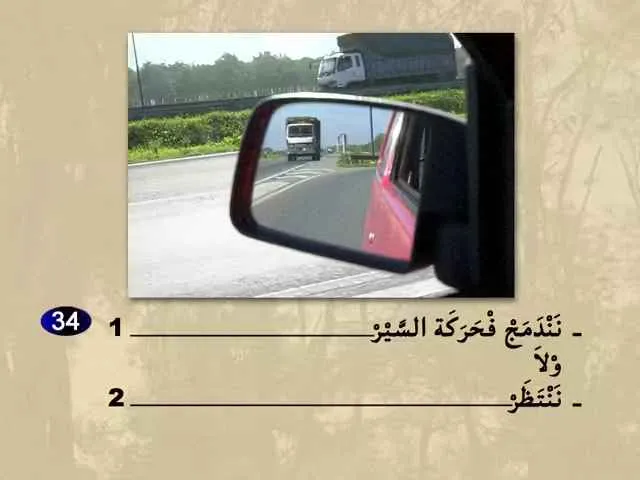
الجواب الصحيح: 2
في مسلك الاندماج، خاصني نتأكد ما كايناش عربات قريبة مني قبل ما ندمج.
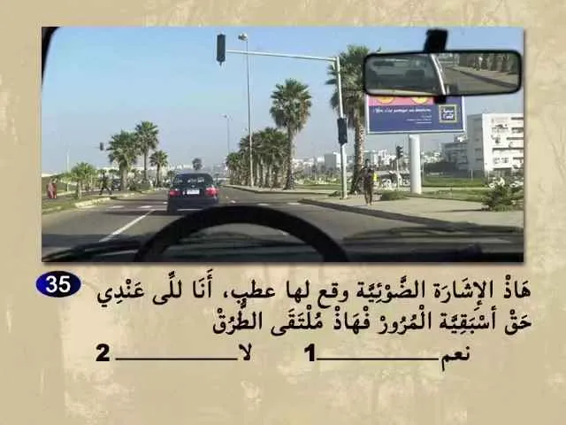
الجواب الصحيح: 2
ملي ما كايناش علامات طرقية أو الإشارات معطلة، خاص نطبق القاعدة العامة لملتقيات الطرق وهي الأسبقية للعربات القادمة من الجهة اليمنى.
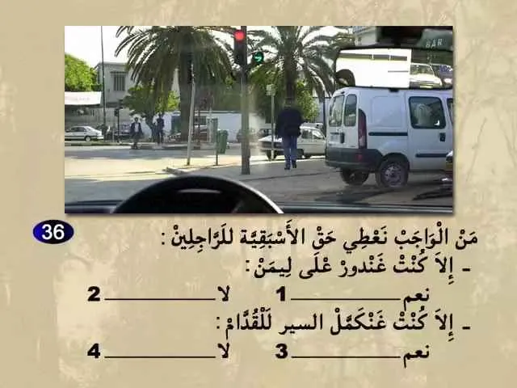
الجواب الصحيح: 1 و 3
خاصني نعطي حق الأسبقية للراجلين ديما.
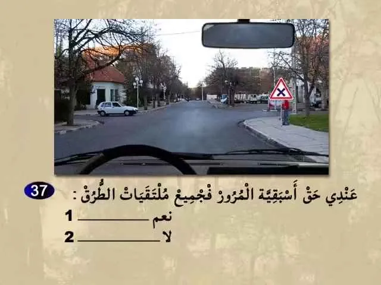
الجواب الصحيح: 2
ملي نكون فملتقى الطرق وما عنديش أسبقية، خاصني نعطي الأسبقية للعربات الجاية من الجهة اليمنى.
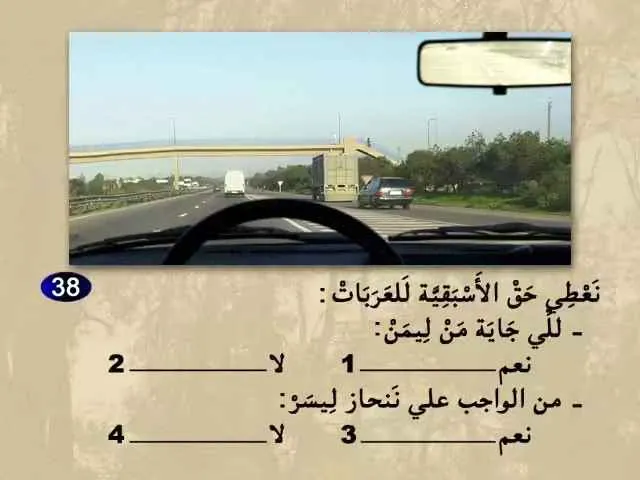
الجواب الصحيح: 2 و 4
العربات اللي فاليمين فمسلك الاندماج ما عندهمش الأسبقية، خاصهم ينتظرو.
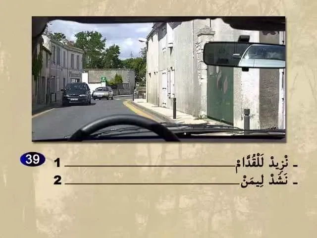
الجواب الصحيح: 1
السيارة الرمادية خاصها تنتظر حتى نفوت أنا حيث الطريق قدامي خاوي.
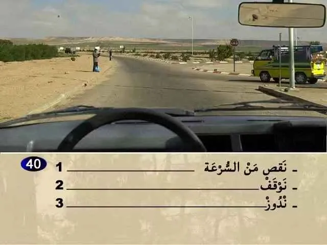
الجواب الصحيح: 1 و 3
ملي نوصل لملتقى الطرق، خاصني نخفف السرعة ونعطي الأسبقية للعربة الجاية من اليمن.